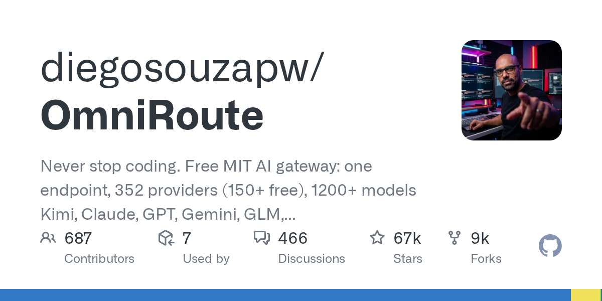

08 GitHub
diegosouzapw/OmniRoute
모델 우회와 토큰 절감을 묶은 게이트웨이
★ 66,637이번 주 +3,249TypeScriptMIT 사내 사용 가능릴리스 v3.8.50 (08.26)최근 활동 09.16테스트 있음예제 있음AGENTS.md 있음

OmniRoute는 여러 모델 공급자를 한곳에서 연결하는 게이트웨이다. 기본 목표는 끊기지 않는 사용과 토큰 절감이다. 코딩 보조도구와의 연결 범위도 넓게 잡았다. README는 기능 설명보다 계보와 차용 관계를 길게 공개한다.
무엇을 하는 물건인가
OmniRoute는 여러 AI 공급자와 모델을 하나의 엔드포인트로 묶는 게이트웨이다. 사용자는 접속 대상을 자주 바꾸지 않고도 Claude, GPT, Gemini, Kimi 같은 모델을 같은 계층에서 다룰 수 있다. 쿼터가 막히면 다른 공급자나 모델로 자동 우회하는 기능도 포함한다. 여러 카드사를 한 결제 단말에서 받아 주는 중계 장치와 비슷하다.
스펙과 도입 조건
- TypeScript로 만들었다.
- 게이트웨이 서버 형태로 쓴다.
- Desktop과 PWA를 지원한다고 적었다.
- Dockerfile이 있다.
- Claude Code, Codex, Cursor, OpenCode, Cline, Copilot과 연동한다고 적었다.
- MCP와 A2A를 지원한다고 적었다.
- 여러 공급자 연결을 전제로 한다.
- 라이선스는 MIT다.
- 최신 릴리스는 v3.8.50이고 날짜는 2026-08-26이다.
이럴 때 쓰면 좋다
- 사내 공용 AI 게이트웨이 시험에서 팀마다 다른 모델 공급자를 한 주소로 통합하고 싶을 때 쓸 수 있다.
- 야간 자동화 작업이 특정 공급자 쿼터에 막힐 수 있어 우회 경로를 준비해야 할 때 맞는다.
- 대용량 로그나 문서 요약처럼 토큰 비용이 큰 업무에서 입력 압축 효과를 검토할 수 있다.
핵심 기능
- 하나의 엔드포인트로 여러 공급자와 1200+ 모델을 연결한다고 제시한다.
- 쿼터 인지형 자동 폴백을 제공한다.
- RTK와 Caveman 압축으로 토큰 사용량을 15-95% 줄인다고 적었다.
성능과 운영 비용
README는 RTK와 Caveman 압축으로 토큰 사용량을 15-95% 줄인다고 적었다. 다만 이 수치의 측정 주체와 조건은 발췌문에 없다. 공급자는 352곳, 무료 공급자는 150+곳, 모델은 1200+개라고 제시한다. 연결 대상이 넓은 대신 운영자는 공급자별 인증, 장애, 우회 정책을 함께 관리해야 한다.
| 항목 | 수치 | 비고 |
|---|---|---|
| 공급자 | 352 | README 표기 |
| 무료 공급자 | 150+ | README 표기 |
| 모델 | 1200+ | README 표기 |
| 토큰 절감 | 15-95% | RTK+Caveman, 측정 조건 미기재 |
사내 도입 체크
- 여러 외부 AI 공급자를 연결하므로 외부 API 호출이 전제된다.
- 프롬프트와 응답이 외부로 나갈 수 있어 데이터 반출 기준과 로그 저장 정책을 확인해야 한다.
- 유지보수 주체는 개인 계정과 다수 기여자 중심으로 보인다.
- 상용 AI 게이트웨이를 일부 대체할 수 있지만, 기업 지원과 장애 책임 범위는 확인 필요다.
주요 용어
엔드포인트(Endpoint): 애플리케이션이 요청을 보내는 접속 주소 쿼터(Quota): 기간이나 속도 기준으로 정한 사용 한도 폴백(Fallback): 기본 경로가 막히면 다른 경로로 넘기는 처리 토큰(Token): 모델이 입력과 출력을 세는 최소 단위 게이트웨이(Gateway): 여러 서비스 연결을 한곳에서 중계·통제하는 계층
원문 정보
제목: diegosouzapw/OmniRoute
최근 활동: 2026.09.16